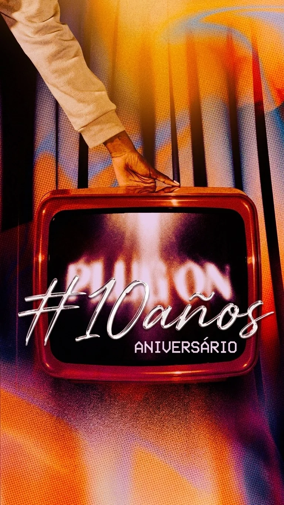
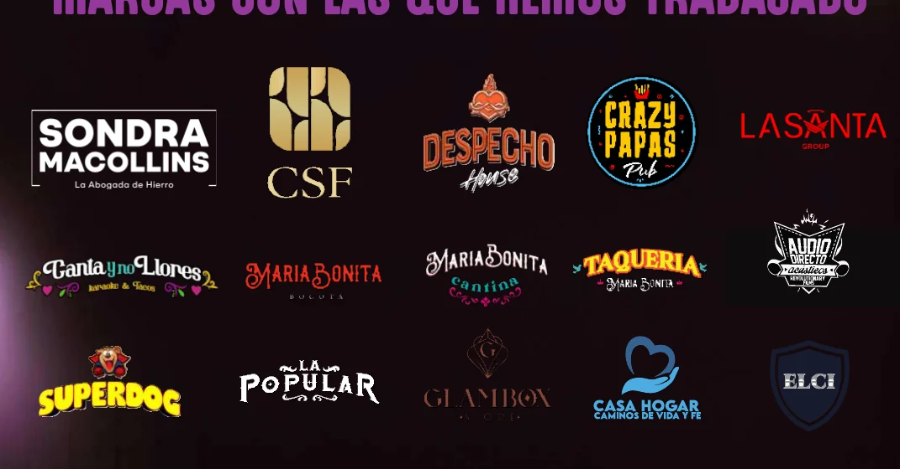
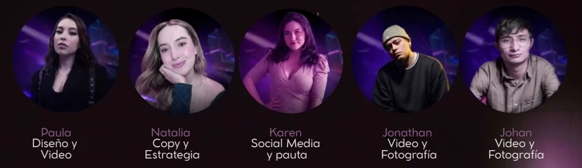

10 años no se celebran con un post.
Se convierten en una campaña.
Nuestra propuesta para Presea es transformar el aniversario en una plataforma de contenido que haga tres cosas al mismo tiempo: recordar por qué la marca importa y su trayectoria, volverla conversación y convertir esa atención en noches llenas.
Esto pidió Presea. Esto propone KSVisual.
La propuesta no parte de una plantilla. Parte exactamente de lo que Presea dijo que necesitaba.
KSVisual se encarga del sistema completo.
No proponemos “publicar contenido”. Proponemos pensar, producir, distribuir, amplificar y medir una campaña.
1. Estrategia & concepto
Definimos idea rectora, tono, públicos, territorios creativos, objetivos y calendario de campaña.
Pensamos antes de producir.2. Producción de contenido
Diseño, fotografía, video, edición, Reels, Stories, carruseles, UGC y piezas hero de evento.
Contenido que se siente Presea.3. Redes con lenguaje propio
Instagram construye deseo, TikTok mueve conversación y Facebook sostiene eventos y comunidad.
Una campaña, no tres copias.4. Creators & activaciones
Scouting, briefing, canjes, seguimiento y medición de microcreadores alineados con nightlife, música y lifestyle.
Canje convertido en contenido.5. Pauta & conversión
Meta Ads, retargeting y llamados claros a WhatsApp, eventos y reserva de mesas.
Alcance con una acción detrás.6. CRM & analítica
Organizamos leads, fuente de llegada, reservas y recurrencia para saber qué contenido sí mueve negocio.
De views a mesas.Una plataforma. Tres propiedades de campaña.
Esto nos permite sostener contenido durante meses sin depender de una sola idea que se agote en una semana.

El reggaetón cambió. El perreo no.
2016 → 2026, Archivo Presea, canciones, recuerdos y conversaciones entre generaciones.

#10Años10Segundos
Un challenge fácil de entender: diez segundos para mostrar diez años de cambio, recuerdo o evolución.

La Presea del Perreo
Un reconocimiento recurrente que puede premiar crew, baile, historia, look o video y generar UGC.

Evento aniversario
La campaña culmina en noches especiales que conectan contenido, creators, reserva y asistencia.
No duplicamos el mismo post tres veces.
Cada canal tiene un trabajo específico dentro del embudo.
Construye estética, reputación, archivo visual, historias de asistentes, Stories de conversión y Reels de marca.
Ver experiencia Instagram → Alcance + participaciónTikTok
Activa challenge, creators, trends, contenido reactivo, nostalgia y UGC con capacidad de escalar orgánicamente.
Ver experiencia TikTok → Eventos + retargetingConcentra eventos, comunidad, recuerdos, prueba social y audiencias útiles para pauta y remarketing.
Ver experiencia Facebook →Qué recibe Presea desde el arranque.
Base sugerida de lanzamiento. El volumen final puede ajustarse al fee acordado, pero la lógica de trabajo sería esta.
Big idea, tono, lineamientos visuales y calendario.
Video o pieza audiovisual central del aniversario.
TikTok/Reels: challenge, nostalgia, creators y momentos de noche.
Posts, carruseles, eventos y contenido de comunidad.
Encuestas, cuenta regresiva, backstage, reserva y coberturas.
Selección de perfiles, brief, canje, contenido y tracking.
Audiencias, retargeting y campañas orientadas a acción.
UTM/códigos, CRM inicial y reporte de resultados.
El primer mes tiene una secuencia.
La idea no es lanzar todo a la vez y rezar al algoritmo. Se construye, se activa, se aprende y se optimiza.
Construimos
Concepto, visual system, calendario, tracking, pauta y producción inicial.
Lanzamos
Hero, primer bloque de contenido, #10Años10Segundos y creators semilla.
Activamos
UGC, La Presea del Perreo, evento, canjes y retargeting.
Optimizamos
Resultados, leads, contenido ganador, CRM y plan del mes siguiente.
El CRM no es un software. Es no perder a quien ya mostró interés.
Ejemplo: alguien ve un TikTok, pregunta por una mesa, reserva y asiste. Si guardamos bien esa relación, deja de ser “una conversación de WhatsApp” y pasa a ser un cliente que podemos volver a activar.
Porque la idea y la ejecución están en el mismo equipo.
KSVisual conecta estrategia, creatividad y ejecución. No se trata solo de que se vea bien, sino de que cada pieza tenga una función dentro del negocio.
KSVisual trabaja con dinámicas como bares, restaurantes y comercios, donde el contenido debe reaccionar rápido sin perder dirección de marca.
Estrategia de campañas, redes, identidad, diseño, video, fotografía, UGC, copy, Meta Ads, influencer marketing y activaciones digitales.
Pensamos concepto y objetivos, creamos diseño/video/copy y ejecutamos publicación, pauta y optimización.
Esta propuesta añade seguimiento de leads, CRM y medición para conectar creatividad con reservas y recurrencia.

Un equipo para pensar, crear y ejecutar.
La estructura de KSVisual cubre estrategia, social, pauta, diseño y producción audiovisual.

Hacer que los 10 años de Presea se conviertan en contenido que la gente quiera vivir, compartir y reservar.
KSVisual se encarga de convertir esa idea en campaña, piezas, creators, pauta, seguimiento y aprendizaje continuo.